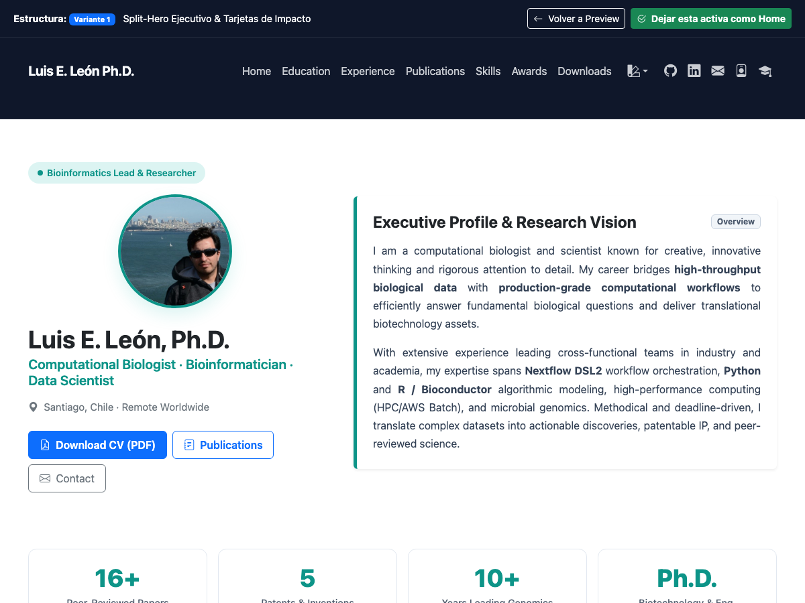
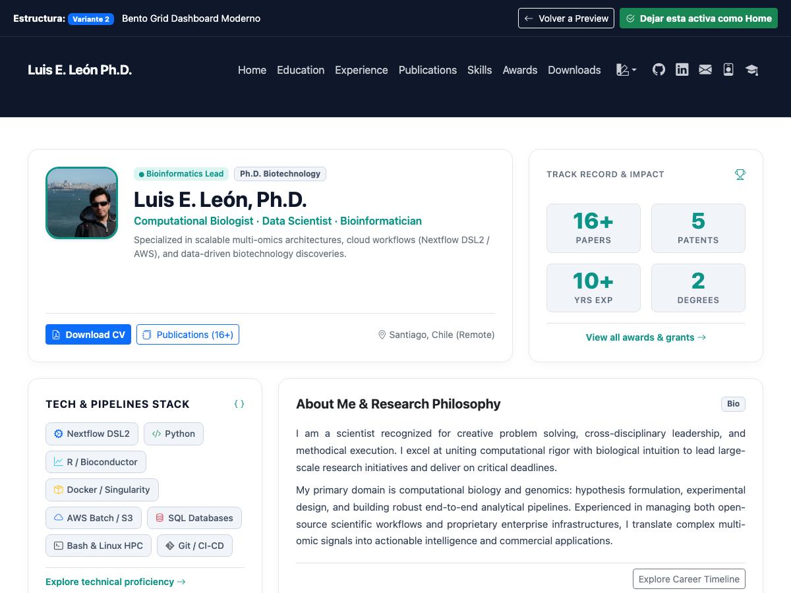
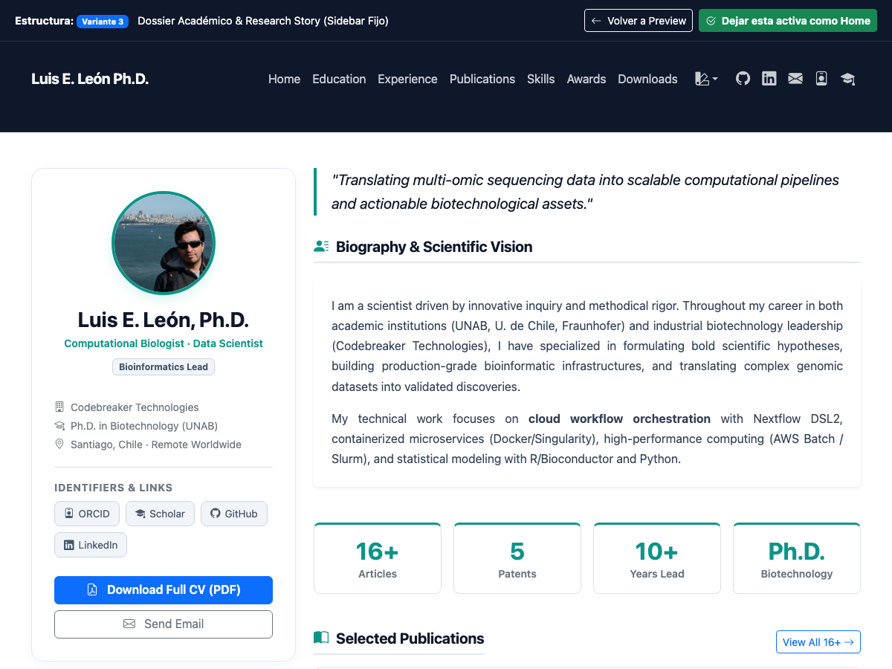
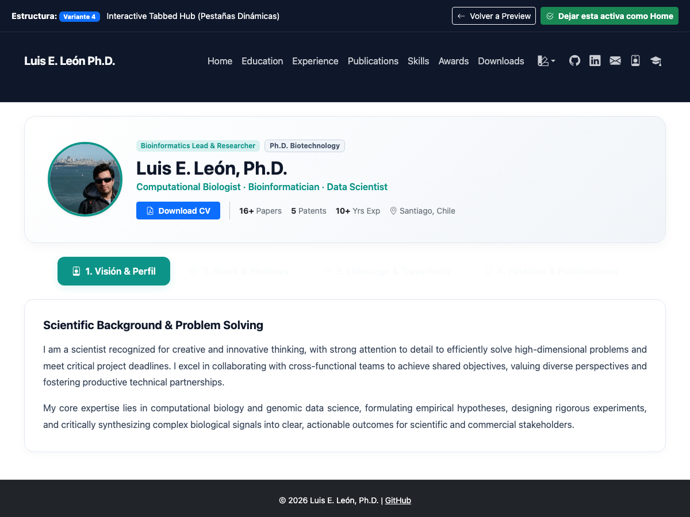
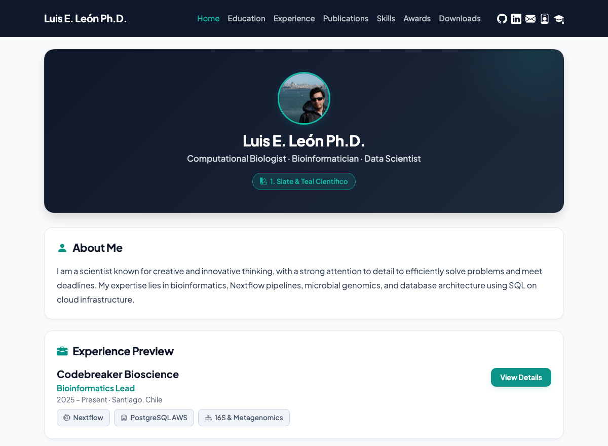
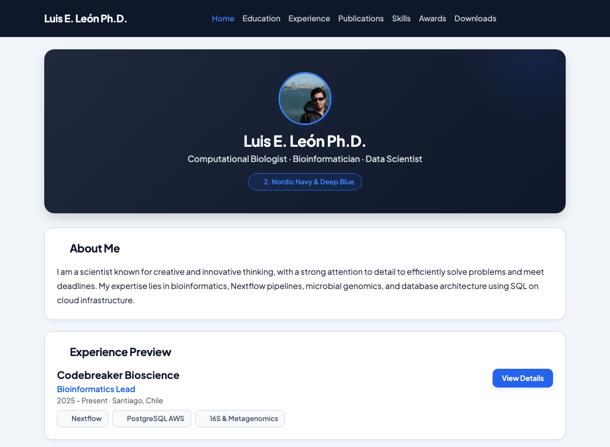
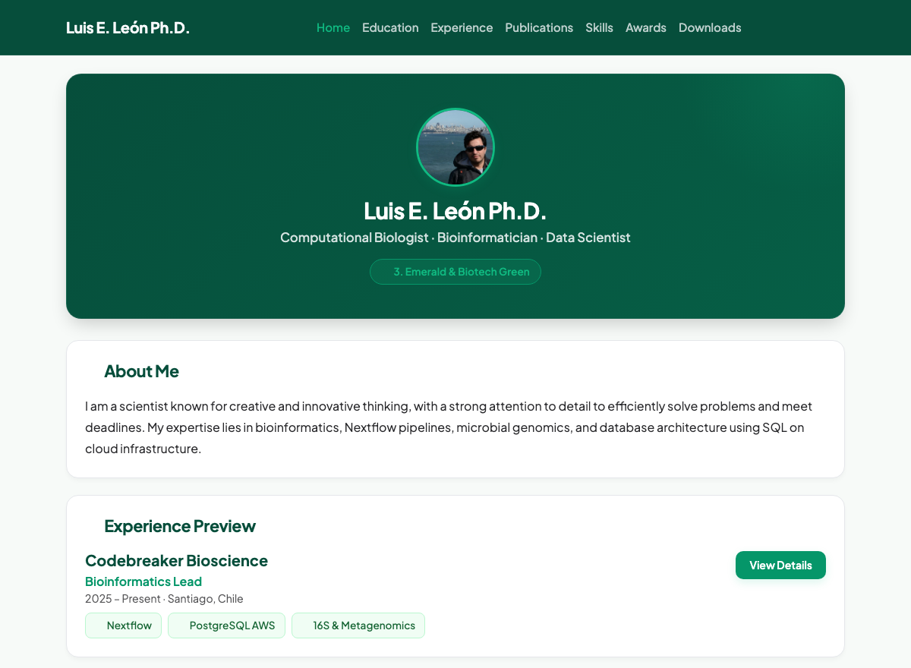
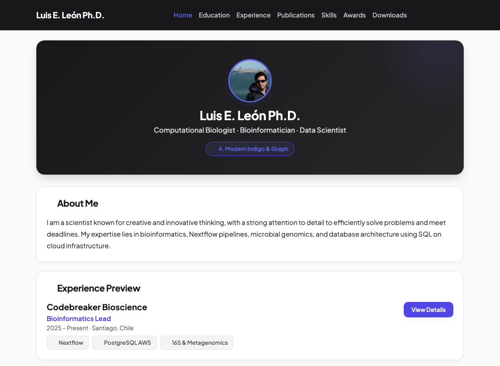

Explora las 4 propuestas de arquitectura estructural para el Home y el switch de 10 paletas profesionales.
Reorganización completa de componentes, jerarquía visual, métricas de impacto y navegación interna.
Hero asimétrico de alto impacto (foto + perfil ejecutivo) · Barra de 4 métricas de impacto · 3 Pilares técnicos (Nextflow, Genómica, Patentes) · Card de rol activo en Codebreaker.

Inspirado en los portfolios modernos de software & data science (estilo Linear/Vercel) · Mosaico Bento Box con foto, matriz de métricas 2x2, nube de herramientas interactivas, bio y accesos directos.

Estilo facultad/laboratorio de prestigio internacional (MIT, Stanford, EMBL) · Sidebar izquierdo sticky con foto, ORCID, Scholar, CV y contacto directo · Columna derecha con citas editoriales, trayectoria y publicaciones clave.

Cabecera panorámica con datos clave y sistema de pestañas de navegación dinámicas dentro de la misma portada (Visión, Stack, Trayectoria, Patentes y Artículos).

Haz clic en cualquier paleta para aplicarla de inmediato a toda la navegación del sitio.




Los 10 temas están disponibles en cualquier momento desde el nuevo botón con icono en la barra de navegación superior.